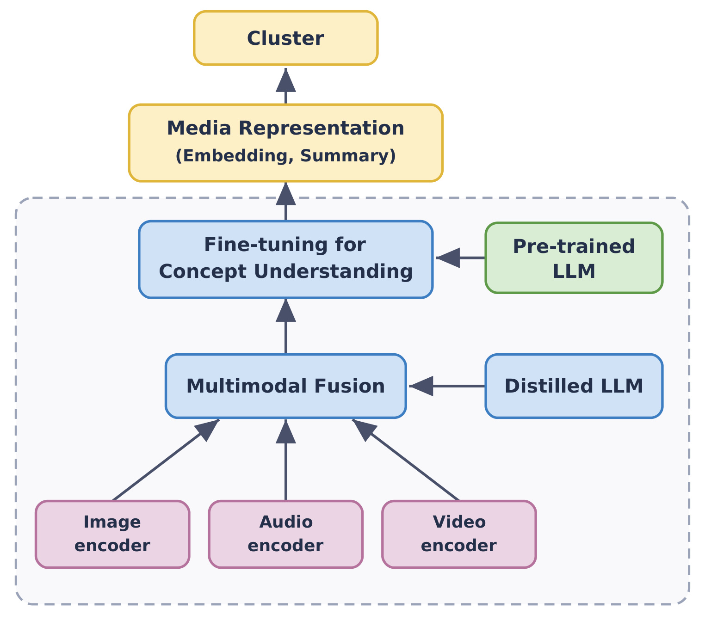
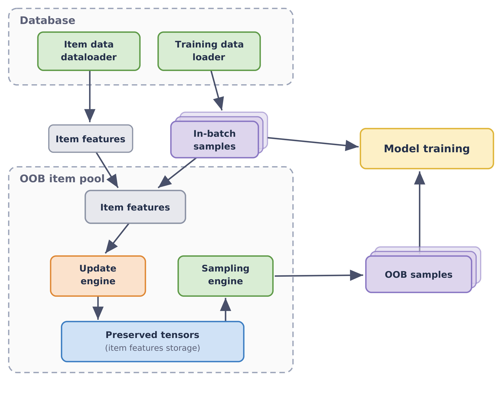
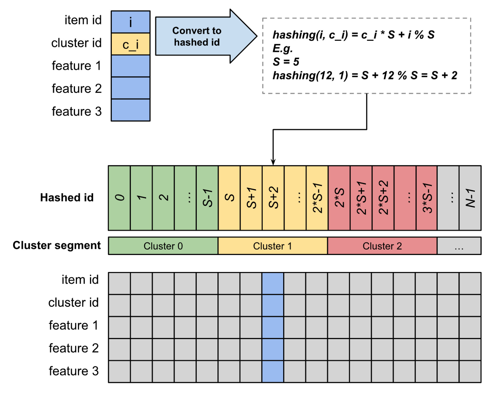
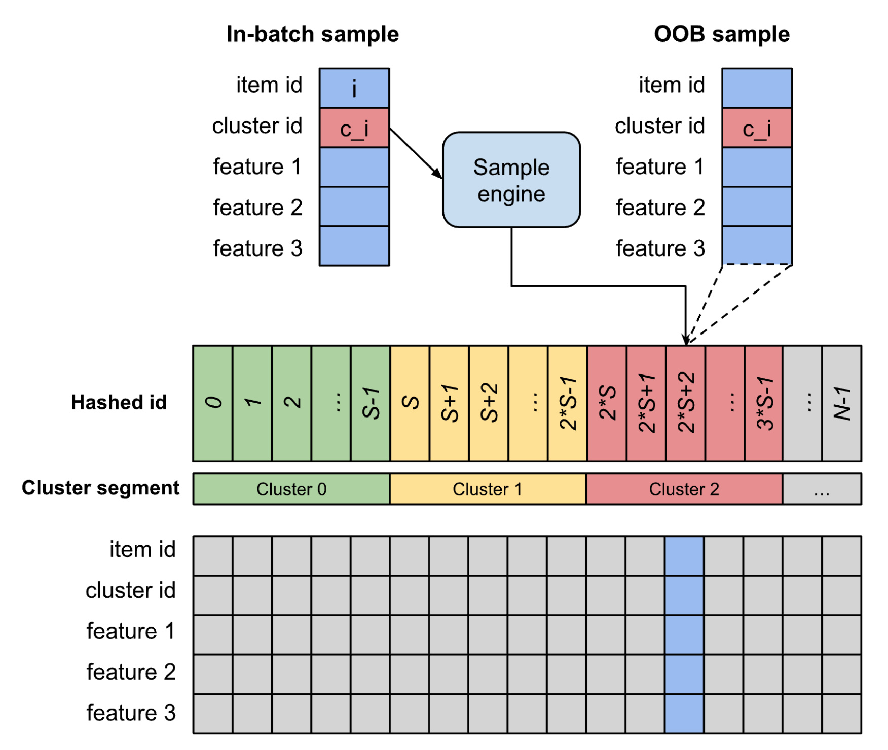
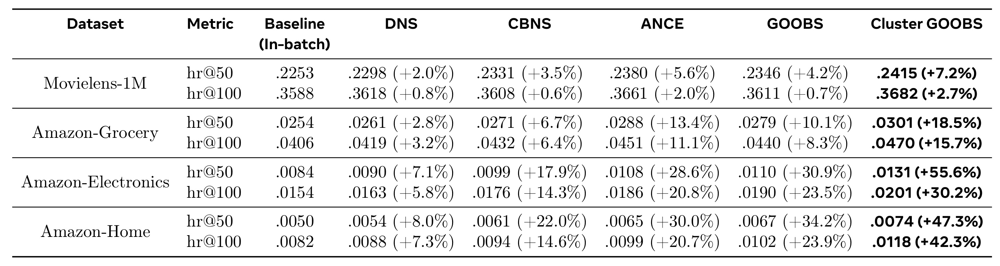
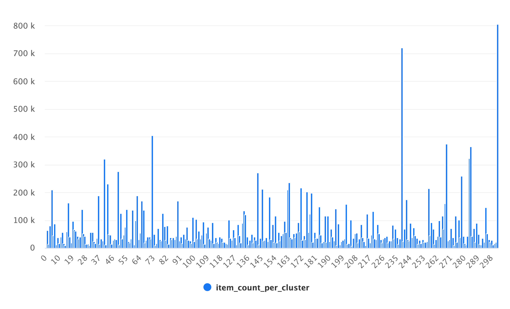
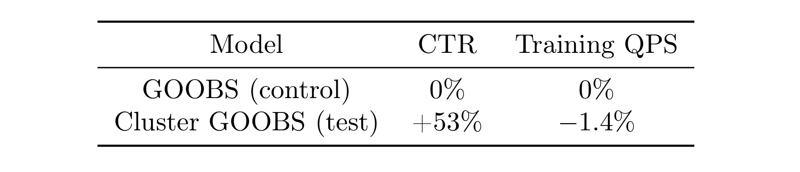
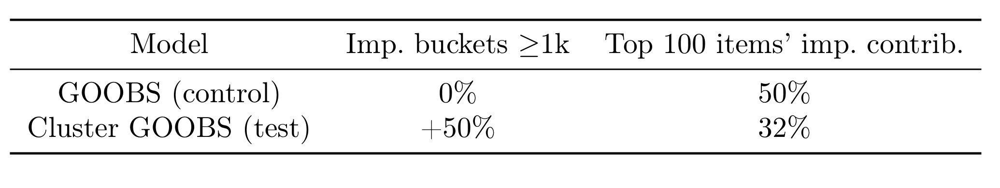

GOOBS：基于 LLM 聚类的大规模双塔召回实时难负采样
[toc]
这篇论文的英文题目是 Real-Time Hard Negative Sampling via LLM-based Clustering for Large-Scale Two-Tower Retrieval，作者 Ivan Ji、Liuyi Hu、Harrison (Zihao) Zhao、Lei Huang、Qunshu Zhang、Max (Xiangjun) Fan、Aameek Singh 均来自 Meta。论文入口为 arXiv:2607.00448，公开日期为 2026-07-01，代码或项目页本轮没有核验到公开入口。它关注的不是排序阶段的复杂模型，而是工业推荐里最常见也最容易被低估的双塔召回训练：正样本之外，负样本到底应该怎样被构造，才能既足够难、又能在大规模在线训练系统里低成本流动起来。
工业双塔召回的训练瓶颈不只是负样本数量不够，而是常用 in-batch / out-of-batch 采样会持续给模型喂过于容易的负例；模型很快学会区分这些样本，却没有被迫在相似内容之间学习细粒度边界，结果既削弱召回训练信号，也可能放大热门内容的反馈循环。
1. 背景和问题
大规模推荐系统通常把候选生成拆成多个阶段：召回先从百万到十亿级候选里找出一个较小集合，后续排序和重排再投入更重的特征、交叉结构和业务规则。双塔模型适合放在召回阶段，是因为用户塔和物品塔可以分别计算 embedding，物品侧 embedding 还能离线预计算并建立近邻索引，线上只需要把用户向量拿去做近邻搜索。这个结构把 serving 成本压得很低，但训练端会遇到一个更基础的问题：如果每个用户点击或互动过的物品只是极端多类别分类里的一个正类，那么模型需要看到怎样的负类，才会学到真正有用的边界。
工业里的常见做法有两类。第一类是 in-batch negative sampling，把同一个 mini-batch 中其他用户的正样本当作当前用户的负样本；它几乎不增加额外取数和显存成本，也方便配合 LogQ correction 修正热门物品被采到的概率偏差。第二类是 out-of-batch 采样，从当前 batch 外部维护的候选池里拿负样本，让训练时见到的候选范围更接近线上检索面对的全量语料。论文指出，这两类方案都有明显弱点：in-batch 的覆盖范围被 batch 大小限制，OOB 随机采样在语料池很大、内容很杂时常常过于容易，模型只要学会粗粒度主题差异就能把负例排开。
“容易负样本”带来的后果并不是训练 loss 下降慢，而是 loss 下降得太舒服。对于双塔召回来说，真正难的是把同一兴趣簇、同一内容主题、同一消费场景里的相似物品排出细粒度偏好差异。随机 OOB 负例经常落在完全不相关的类别上，梯度贡献很小；in-batch 负例虽然便宜，但 batch 里物品分布受流量和曝光机制影响，热门内容更容易反复出现。长远看，模型可能更擅长确认“这个热门物品不是明显错的”，却没有足够机会学习长尾物品、相近物品之间的边界。
论文把这个问题和 popularity bias 放在一起看。推荐系统如果长期偏向热门物品，热门物品会得到更多曝光、更多互动、更多训练样本，之后又更容易在下一轮模型中被召回，形成难以打破的反馈循环。作者希望用 hard negative sampling 同时改善两个点：一是让训练中出现的负样本更接近正样本，迫使双塔 embedding 学细节；二是通过同簇而不是全局随机采样，让长尾或非头部内容也参与到更有信息量的比较里。这个目标本身并不新，Dynamic Negative Sampling、ANCE 等路线也在追求 hard negatives，但它们常常需要模型打分、全局近邻索引或异步刷新，放到工业实时训练链路里成本较高。
GOOBS 的切入点是把 hard negative 的“难度来源”从当前模型几何近邻，换成由内容理解模型生成的 item cluster。只要 cluster 能把语义相近或用户兴趣相近的物品放在一起，那么从正样本所在 cluster 里抽 OOB 负例，就比全局随机抽样更难，又不需要每轮训练都维护昂贵的全局 ANN 硬负索引。论文进一步强调这个系统要能处理 billions of training data，并在训练时实时更新 item pool；这使它的重点不是单个 loss 的改写，而是“聚类表征、负样本池、更新引擎、采样引擎”四部分能否合成一条生产可用的数据流。
因此，读这篇论文时不应只看“LLM 聚类”这个新标签，而要把它放回召回系统的训练闭环：内容理解模型负责定义相似性，GOOBS 负责让相似物品以低成本进入负样本分母，双塔模型负责把这些更接近决策边界的比较沉淀到 embedding 空间。这个闭环是否成立，取决于 cluster 是否稳定、pool 是否新鲜、负样本是否真难而不假，以及离线收益能否穿透到线上 CTR 和内容分布。
2. 方法
2.1 检索目标与双塔训练基线
论文先把 retrieval model 写成极端多分类问题。给定用户侧输入 $x_i$ 和发生 engagement 的物品 $y_i$，模型要在合格物品集合 $I$ 上给正样本较高概率。这个目标看似只是分类写法，实际决定了负样本采样为什么会成为召回训练的中心问题：分母里哪些物品被拿来比较，会直接改变 embedding 空间的边界。完整 softmax 可以写成：
符号解释：$x_i$ 表示第 $i$ 个用户或请求上下文，$y_i$ 表示对应正样本物品，$I$ 是可召回物品全集，$\theta$ 是模型参数，$s(x_i,y_j\mid\theta)$ 是用户与物品之间的打分函数。这个式子说明理想训练目标是把正物品与全语料中的所有候选比较，但工业语料的 $I$ 至少是百万级，直接完整归一化代价不可接受，因此后面的所有负采样技术本质上都在近似这个分母。
在基础双塔结构里，打分函数通常是用户向量和物品向量的点积：
符号解释：$v_i$ 是物品塔输出的 item embedding，$u_i$ 是用户塔输出的 user embedding，$v_i^{T}u_i$ 表示两者在同一向量空间里的相似度。这个设定的工程价值很清楚：物品向量可以提前算好并索引，用户向量在线生成后直接检索；但它也意味着训练时的负样本会直接塑造整个 embedding 空间的几何结构。
作者采用的基础交叉熵目标是：
符号解释：$n$ 是样本数，$r_i$ 是 engagement 标签或权重，$P(y_i\mid x_i;\theta)$ 是上一式给出的正样本概率。若负样本太容易，分母中的负类项很快变得接近无贡献，梯度就不能继续推动模型学习“相似但不该召回”的边界；若负样本太可能其实是潜在正样本，又会引入 false negative。GOOBS 的方法设计就在这两个风险之间取平衡：用 cluster 约束难度，但又不把 cluster 做得过细。
2.2 同簇 hard negative 的采样目标
Cluster GOOBS 的核心训练改动，是先给每个物品分配 cluster id，然后对样本 $(x_i,y_i)$ 从 $y_i$ 所在 cluster 中抽 $K$ 个负样本 $y^{-n}_{i1},y^{-n}_{i2},\ldots,y^{-n}_{iK}$。这些负样本不是全局随机噪声，而是在某种语义或内容维度上接近正样本的物品，因此对用户塔和物品塔来说更难区分。论文给出的 sampled cross-entropy 形式为：
符号解释：$y^{-n}_{ik}$ 是第 $i$ 个样本的第 $k$ 个同簇负样本，$K$ 是同簇负样本数量，分母不再遍历全量 $I$，而是由正物品和采样负物品组成。这里的关键是“同簇”改变了采样分布：模型不能只靠类别、主题或流行度粗略区分正负，而要在相似内容内部学习更细的 preference signal。论文在理论解释里借用了 contrastive learning 的直觉：距离 anchor 太远的负样本 similarity 很低，梯度接近消失；局部邻域里的负样本更接近决策边界，能提供更大的梯度范数。
这个模块最重要的不是“多采几个负样本”，而是把负样本分布从全局随机改成正样本所在语义簇内的局部比较。 这解释了为什么它可以和普通 GOOBS 区分开：普通 GOOBS 已经提供实时 OOB pool，Cluster GOOBS 则进一步规定 OOB pool 中哪一段会被抽到。风险也同时出现：如果 cluster 太细，抽到的负样本可能是用户也会喜欢的 false negative；如果 cluster 太粗，又会退化成普通随机 OOB。论文在引言和方法部分都强调 cluster granularity 的重要性，但没有给出一个通用自动调参准则。
2.3 LLM-based Cluster Generation
同簇采样依赖 cluster 的质量。公开数据集实验里，作者可以直接用 MovieLens genre id 或 Amazon category id；工业场景中，论文使用内部 multimodal content embedding model，从文本、图像、视频等内容中学习 media representation，再派生 cluster。这个模型由预训练 LLM、distilled LLM、图像/音频/视频 encoder、多模态融合和任务 fine-tuning 组成。相比手工类目或单模态标签，LLM-based clustering 的目标是让 cluster 更接近内容语义和用户兴趣，而不是只反映表层 taxonomy。

Figure 1 把工业 cluster 来源画成一条内容理解链路。底部的 image encoder、audio encoder、video encoder 把多模态原始内容变成可融合特征；右侧 distilled LLM 和 pre-trained LLM 提供语言和概念理解能力；中间的 multimodal fusion 与 fine-tuning for concept understanding 把这些信号压成 media representation，最后输出 cluster。这个图在方法叙事里承担一个很重要的约束：GOOBS 本身不是直接让 LLM 在线参与负采样，也不是在训练双塔时调用 LLM 打分，而是离线或准实时地利用 LLM 家族模型产出的内容表征来定义 cluster。这样做把昂贵的语义理解放在 cluster 生成阶段，把训练时的采样保持为轻量查表。
从推荐系统工程角度看，这个拆法有两个含义。第一，cluster 质量会决定 hard negative 的“难而不假”。如果媒体表征能捕捉主题、语义、风格和用户消费场景，那么同簇负样本大概率与正样本相似，训练信号更强；如果表征只学到粗类目或热门标签，同簇采样就可能只是换了一种类别采样。第二，LLM cluster 不是一次性静态资产。内容生态变化、冷启动物品进入、视频和音频理解模型更新，都会改变 cluster 的稳定性；因此线上使用时需要监控 cluster size、cluster purity、用户反馈和 false negative 风险。
2.4 GOOBS: Real-time Sampling Framework
GOOBS 的系统部分解决一个生产问题：即便已经有了 cluster id，训练时如何实时拿到同簇 OOB 样本，而不引入巨大的查索引、重算 embedding 或跨服务访问成本。论文把 GOOBS 定义为 Global Out-of-Batch Sampling 框架。它维护一个 OOB item pool，pool 里保存物品特征 tensor；每个物品根据 item id 和 cluster id 被放入某个 slot。训练 batch 到来时，一方面 in-batch item 会更新 pool，另一方面 sampling engine 根据 in-batch item 的 cluster id 从对应 cluster segment 中抽 OOB item，最后把这些 OOB samples 与 in-batch samples 一起送入训练。

Figure 2 展示了 GOOBS 的完整数据流。左上角 database 提供 item data dataloader 和 training data loader，分别给 OOB item pool 和 in-batch samples 提供输入；OOB item pool 不是简单的列表，而是 preserved tensors，也就是可以在训练时直接复用的 item features storage。Update engine 负责把新出现的 item features 写回 pool，sampling engine 负责根据当前 batch 的 cluster id 抽取 OOB samples。右侧 model training 同时接收 in-batch samples 和 OOB samples。这个图说明 GOOBS 的效率来自“在训练进程附近维护可采样 tensor 池”，而不是每一步都去远端数据库或全局索引里找 hard negatives。
更新引擎的核心规则可以写成：
符号解释：$x_{ij}$ 表示第 $i$ 个 batch 中第 $j$ 个 item id，$c_{ij}$ 是它的 cluster id，$S$ 是每个 cluster segment 的 slot 数。$c_{ij}\cdot S$ 决定该 item 属于哪一个 cluster segment，$x_{ij}\bmod S$ 决定它在 segment 内写入哪个 slot。这个哈希让同一 cluster 的物品被组织到连续 segment 中，使采样阶段可以只在目标 segment 内随机取样，而不需要扫描全池。

Figure 3 把上面的 slot 公式可视化了。左侧一个训练 item 带有 item id、cluster id 和多行 feature；上方公式示例给出当 $S=5$ 且 item id 为 12、cluster id 为 1 时，写入位置是 $S+2$。中间长条被分成 Cluster 0、Cluster 1、Cluster 2 等 segment，每个 segment 内有 $S$ 个 slot。下方 tensor 表示 item id、cluster id、feature 1 到 feature 3 等 preserved tensors。这个图的价值在于它明确了 GOOBS 的内存布局：cluster 决定大区，item hash 决定区内槽位，更新不依赖模型当前 embedding 的最近邻结果。因此它比 ANCE 那类全局 ANN 刷新路线更容易做到实时、低复杂度。
采样引擎则可以抽象为：
符号解释：$N_{ij}$ 是为当前 in-batch item 抽到的 OOB negative，$\operatorname{pool}[\cdot]$ 表示从保存 item feature 的池中读取对应 slot，$r_{ij}$ 是 cluster segment 内的随机偏移。这个式子与更新公式配套：更新阶段把同 cluster 物品写在同一个 segment，采样阶段只在该 segment 内随机读出一个已有物品。训练时会采到同簇 OOB 负样本；推理时仍然是常规双塔召回，不需要额外调用采样引擎。

Figure 4 展示了 sample engine 如何使用当前 in-batch sample 的 cluster id。左侧 in-batch sample 中的 cluster id $c_i$ 指向 pool 里的某个 cluster segment；sample engine 在该 segment 内随机选取一个位置，并从 preserved tensor 中取出 OOB sample。右侧的 OOB sample 带着同一 cluster id，但 item id 和 features 来自池中已有物品。这个图补上了 Figure 3 没有讲完的另一半：GOOBS 不是只维护一个更大的负样本池，而是通过 segment 化布局把“相似内容里的随机负例”变成一个常数级索引操作。真正需要线上小心的是 segment 内样本的新鲜度、空槽命中率、cluster 过细导致的 false negative，以及热门物品在 pool 中反复覆盖其他物品的可能性。
3. 实验结果
3.1 Public Data-sets
公开实验使用 MovieLens-1M 和 Amazon Reviews 的 Grocery、Electronics、Home 子集。作者采用 timestamp split：前 80% 做训练，后 20% 做评估；评分 1-2 转成负样本，3-5 转成正样本；特征包括 user id、item id、cluster id 和用户历史交互序列。值得注意的是，论文明确避免 k-core filtering，也不把目标物品只和 100 个随机负样本比较，而是在完整 global corpus 上做 exact global ranking。这个设定会让绝对 HR@50、HR@100 数字偏低，但比 sampled metrics 更接近真实召回难度。
对比方法包括六类：Baseline 是 in-batch negative sampling 加 LogQ correction；DNS 用当前模型认为相关但实际为负的物品作为动态 hard negatives；CBNS 复用近期 batch 的 item embeddings；ANCE 使用全局 ANN index 选近邻 negatives；GOOBS 是随机 OOB sampling；Cluster GOOBS 则在 GOOBS 框架上改成同簇 OOB sampling。论文还给出采样比例：MovieLens-1M 上 random to cluster OOB samples 为 1:15，Amazon Reviews 上为 1:31。

Table 1 是公开实验的主结果。Cluster GOOBS 在四个数据集、八个指标上都是最优：MovieLens-1M 的 HR@50 从 baseline 的 .2253 提到 .2415，相对 +7.2%；Amazon-Grocery 的 HR@50 从 .0254 提到 .0301，相对 +18.5%；Amazon-Electronics 的 HR@50 从 .0084 提到 .0131，相对 +55.6%；Amazon-Home 的 HR@50 从 .0050 提到 .0074，相对 +47.3%。这张表还说明普通 GOOBS 已经能带来收益，例如 Amazon-Home HR@50 为 +34.2%，说明 OOB pool 本身扩大了训练负样本覆盖；但 Cluster GOOBS 在所有列上继续超过 GOOBS，说明“从同簇抽”确实比“从池里随机抽”更有信息量。与 ANCE 相比，Cluster GOOBS 在 Amazon-Electronics 和 Amazon-Home 上的 HR@50 相对提升更大，论文借此强调它不需要维护全局 ANN 刷新也能得到较强 hard negative 效果。
这些结果支持论文的主张，但也要注意边界。公开数据集中的 cluster id 来自 genre 或 category，并不等同于工业 LLM cluster；MovieLens 的 item space 比真实短视频或内容平台小很多，Amazon 子集虽然稀疏但仍是离线回放。Table 1 能证明同簇负采样在若干公开场景下优于多种负采样基线，却不能单独证明 LLM clustering 是收益来源，因为公开实验里的 cluster 不是由论文 Figure 1 的 LLM 内容模型生成。这里更准确的解读是：cluster-based OOB sampling 这个机制有效，而 LLM cluster 的工业价值需要看后面的在线实验和 cluster distribution。
3.2 Industry Data-sets
工业实验把 Cluster GOOBS 放进一个大规模推荐系统做在线 A/B。控制组和实验组各随机选择 3% 用户；控制组使用同样双塔模型架构加普通 GOOBS，实验组使用同样双塔模型架构加 Cluster GOOBS。论文没有披露具体业务场景、流量规模、实验天数、置信区间或显著性检验，但明确说明优化目标包括 clicks，因此用 CTR 作为在线指标。这里的关键对照是：模型架构保持相似，主要差异落在负采样策略上。
在 cluster selection 部分，工业系统使用 Section 3.4 中的 LLM-based content understanding model 来学习 media representation 并派生 cluster。论文称一共有 300 个 cluster，其中 98% 的 cluster 至少有 10k items。这个信息很重要，因为 GOOBS 的 segment sampling 需要足够多 item 才能避免早期 pool 命中率低，也需要避免 cluster 小到频繁抽到潜在正样本或重复物品。

Figure 5 展示了 300 个 cluster 的 item_count_per_cluster 分布。横轴是 cluster id，纵轴最高到 800k item；大部分 cluster 的柱子较低，但仍可见若干明显高峰，说明工业内容分布并不均匀。结合正文“98% clusters have >=10k items”的说法，这张图说明作者选择的 cluster 粒度偏向可采样性：绝大多数 segment 都足够大，能提供同簇 OOB negatives；同时仍有若干超大 cluster，可能对应热门大类或泛化内容群。对工程落地来说，这意味着需要监控两端风险：小 cluster 可能 false negative 或命中率不足，大 cluster 可能又回到过粗采样，难度不够集中。

Table 2 给出最醒目的在线结果：相对于 GOOBS control，Cluster GOOBS test 的 CTR 相对提升 +53%，Training QPS 相对变化为 -1.4%。如果这个在线实验有足够流量和稳定统计，这个幅度非常大；但论文只给相对提升，没有提供置信区间、实验时长、分桶方差或其他 guardrail 指标。因此在技术记录里应把它写成“论文报告的相对在线提升”，而不是把 +53% 直接外推成任意平台都可复现的收益。训练 QPS 只下降 1.4% 则更贴近系统设计主张：同簇采样主要是 segment 内读写，不需要每步调用 LLM 或全局 ANN 服务；推理 QPS 论文还称没有 regression，因为采样仅发生在训练阶段。

Table 3 讨论 popularity debias。作者把过去 1 天 impressions 不低于 1k 的 items 作为 targeted item cohorts，在实验组中这类 buckets 的比例相对增加约 +50%；同时 top 100 items 的 impression contribution 从 50% 降到 32%。这组结果说明 Cluster GOOBS 不只是提高 CTR，也可能改变召回模型对头部内容的依赖。合理解释是：同簇 hard negatives 迫使模型在相似内容内部学习细粒度区分，长尾或中腰部物品如果与用户兴趣匹配，就更有机会通过 embedding 边界进入召回集合。不过这个结论仍需谨慎，因为曝光分布还会受 ranking、流量策略、去重、多样性规则和业务运营影响；论文没有展示完整 causal decomposition。
把公开数据和工业数据放在一起看，论文证据链是比较完整的：Table 1 证明 cluster-based OOB negatives 在离线检索指标上优于 in-batch、random OOB 和多种 hard negative baseline；Figure 5 说明工业 cluster 的规模能支撑 segment sampling；Table 2 说明在线 CTR 有显著相对收益且训练成本可控；Table 3 则把收益延伸到 popularity bias。它的薄弱处也同样清楚：缺少开源代码和公开工业细节，LLM cluster 的训练方式、更新频率、cluster assignment 稳定性没有充分展开，在线结果缺少统计显著性和 guardrail 指标。对读者来说，这篇论文最值得复用的是系统形态和采样分布思想，而不是直接照搬具体数值。
4. 总结
4.1 我的判断
GOOBS 的价值在于把“hard negative sampling”从离线研究里的昂贵候选挖掘，转成了一个可嵌入训练数据流的 OOB tensor pool 问题。它没有改变线上双塔 serving 形态，也没有把 LLM 放进召回实时路径，而是用 LLM-derived cluster 作为训练时采样分布的约束。这种设计对工业推荐很实用：线上仍然保持向量检索效率，训练时通过更难的负样本改善 embedding 空间，系统复杂度主要集中在 item pool 的更新、segment 组织和 cluster 质量监控。
我会把这篇论文放在“召回训练数据工程”而不是“LLM4Rec 模型结构”类别里。它的核心贡献不是提出一个新的 LLM recommender，而是把 LLM 内容理解结果变成双塔训练里的 hard negative prior。对长视频、短视频、商品、广告素材、图文内容等多模态候选池，这个 prior 很有迁移价值；对只有 item id 协同过滤信号、内容语义弱或 cluster 极不稳定的业务，收益就不一定成立。
4.2 局限与风险
第一，论文没有公开实现细节，尤其是 OOB item pool 的并发更新、空槽处理、过期 item 淘汰、跨机同步和容错策略。Figure 2-4 足以理解思路，但不足以复现一个工业级训练组件。第二，LLM cluster 的构造细节较少，读者看不到 embedding 模型的训练数据、cluster 算法、更新频率、cluster purity 评估和 cold-start 处理。第三，在线 +53% CTR 很强，但没有实验时长、置信区间、样本量、分端指标或长期留存指标，不能判断这个收益是否稳定、是否来自短期探索或流量结构变化。第四，popularity debias 的归因仍不完整，top-100 impression contribution 降低可能受召回、排序、策略和内容供给多因素影响。第五，同簇负采样存在 false negative 风险，尤其当 cluster 太细或用户兴趣本来就覆盖 cluster 内多个相似物品时，模型可能被迫压低潜在正样本。
4.3 后续跟进
后续如果要复现或迁移，我会先做三个检查。第一，用现有内容 embedding 或类目体系离线构造 cluster，对比 in-batch、random OOB、same-category OOB、ANN hard negatives，先确认同簇采样在本业务的离线 recall/NDCG/AUC 上是否稳定提升。第二，单独做 cluster granularity sweep，观察 cluster size、false negative rate、长尾覆盖、训练收敛和线上召回多样性之间的关系，不要只看一个固定 300-cluster 配置。第三，在训练系统里先实现最小版 segment pool，验证 QPS、内存、更新延迟、空槽命中率和多机一致性，再考虑接入更复杂的 LLM-derived cluster。
更长期看，这篇论文还可以和个性化 RAG、用户兴趣记忆、生成式推荐的 candidate generation 结合。只要一个系统需要在大语料中训练检索模型，就会遇到“随机负样本太容易、全局 hard negative 太贵”的问题；GOOBS 给出的解法是把内容语义先压成 cluster，再用实时池化机制把同簇负样本送到训练目标里。它的工程启发很直接：与其在每一步训练时寻找最难负例，不如先构造一个足够好的局部候选空间，让训练始终在相似物品之间做低成本、可扩展的比较。